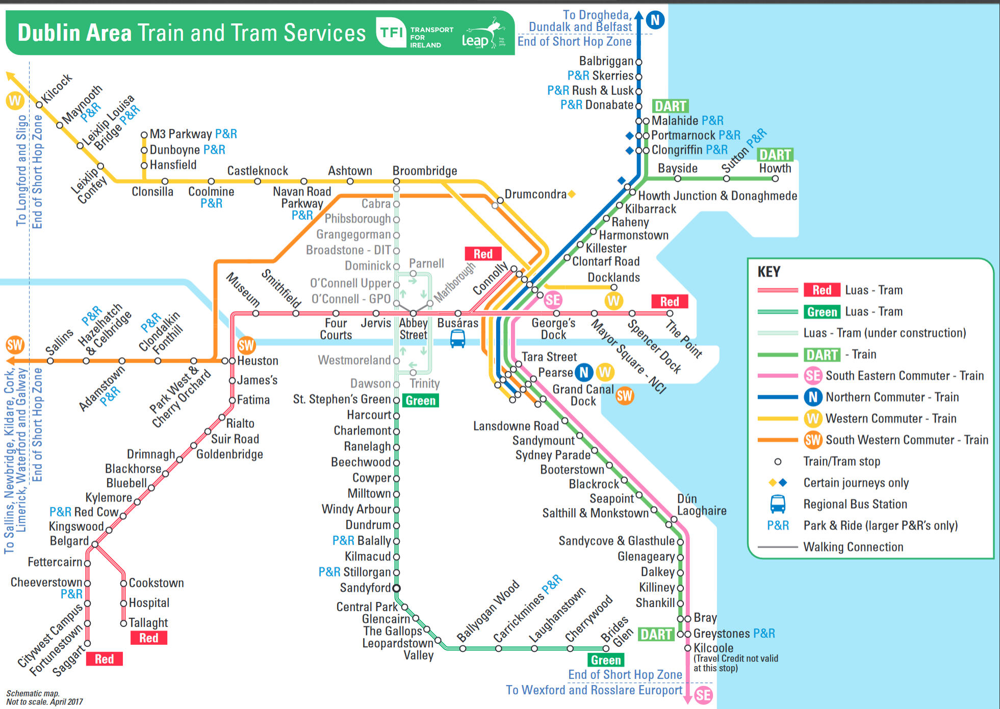

Accessibility in Dublin, Ireland

Who Needs Access?
A portion of city planning concerns considering the needs of its occupants. According to the
Where Can They Go?
Another two key datasets provided by the Smart Dublin free data portal include: locations of LUAS train stations and parking areas with accessible parking spots. These are two options for a person with a disability to use to get around Dublin. However, the accessible parking area requires that one has access to a private vehicle, which is a barrier for many people.
Other Routes
Dublin has many other trains aside from the LUAS. There are several stops all throughout the city! These additional train routes greatly increase the accessibility of Dublin.
How Accessible is Dublin?
The people of Dublin certainly have great access to public transportation, with stops leading to all the major areas of the city. In addition, if they want to use a private vehicle, there are a few locations (mainly park and rides for the train) with several accessible spots to park!